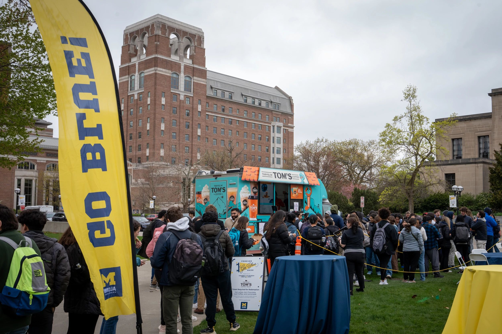

WELCOME TO MAIZE & BLUE CUPBOARD!
To ensure members of the University of Michigan community—whether on a tight budget or physically restrained from getting to a grocery store—receive equitable access to healthy, nutritious, and nourishing food and the ability to prepare it for themselves or others.

MAKE AN APPOINTMENT NOW
Shopping at the Maize and Blue Cupboard is by appointment only. Please make an appointment by visiting our sign up page.
WHO WE ARE
College students and staff are experiencing food insecurity at alarming rates. The Maize and Blue Cupboard is here to provide an immediate and comprehensive response for the U-M community. By offering resources, educational opportunities, compassionate support and more, we help students develop the skills to make informed decisions.
WHAT WE PROVIDE
FOOD
Produce, dairy, meat, bread, frozen and shelf-stable foods (i.e. rice, cans, tuna, etc.).
KITCHEN & COOKING
Dishes, silverware, pots & pans, Tupperware, cutting boards, knives, and other kitchenware.
PERSONAL & HOUSEHOLD
Trash bags, toilet paper, cleaning supplies, hygiene products, school supplies, baby items and more.
SUPPORT
Get connected to campus experts like CAPS, Dean of Students and Financial Aid, as well as SNAP (Michigan’s food program).